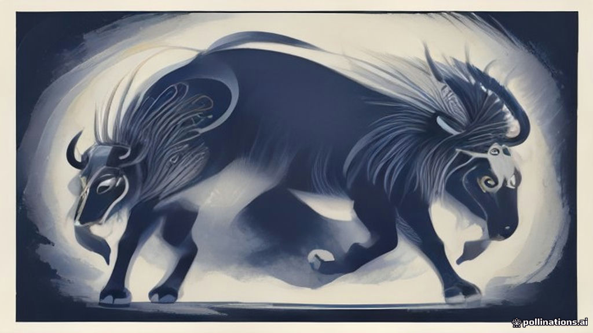

Market Wrap — 13 November 2026
TL;DR
- Indian markets lacked clear directional cues today as key index data was unavailable.
- Strong FII buying was a significant factor, offsetting DII selling.
- Global sentiment was cautious, with US tech stocks facing a selloff and rising expectations for a Fed rate hike.
- Standout gainers and losers for the day were not available in the provided data.
- Foreign Institutional Investors (FIIs) remained net buyers, extending their buying streak.
- Futures & Options (F&O) positioning data for today's session is unavailable.
How the market behaved today
Specific closing data for the Nifty 50 and Bank Nifty, including their percentage changes and daily ranges, is unavailable. Similarly, performance details for the Nifty Midcap 100 and Nifty Smallcap 100 are also not available.
| Index | Close | Change | High | Low |
|---|---|---|---|---|
| Nifty 50 | data unavailable | data unavailable | data unavailable | data unavailable |
| Bank Nifty | data unavailable | data unavailable | data unavailable | data unavailable |
| Midcap 100 | data unavailable | data unavailable | data unavailable | data unavailable |
| Smallcap 100 | data unavailable | data unavailable | data unavailable | data unavailable |
India VIX data is unavailable. Therefore, a read on market volatility for the day cannot be provided.
What moved the market — the factors
Today's market sentiment was primarily shaped by a mix of global cues and consistent foreign institutional inflows, even as specific Indian index performance data remains unavailable. On the global front, US stocks experienced a reversal of early gains, with the Nasdaq falling 1.42% and the S&P 500 nearly 1% lower, largely due to "Nvidia turmoil" triggering a broad technology sector selloff. This weakness in global tech could have cast a shadow on investor sentiment worldwide.
Adding to the cautious mood were rising expectations for US interest rate hikes. BofA Global Research now anticipates a Federal Reserve rate hike in January 2027 following an unexpectedly high Consumer Price Index report for October. Chicago Fed President Austan Goolsbee also voiced concerns on CNBC, stating the Fed needs to guard against demand overheating, driven partly by increased demand from the AI buildout. This hawkish outlook from the US Fed was somewhat countered by US Treasury Secretary Scott Bessent, who suggested the Fed should keep an open mind about rate adjustments, especially concerning energy shocks tied to the Iran war.
Meanwhile, European stock markets, particularly the STOXX 600, showed relative stability, attributed to their lower exposure to tech giants compared to the US. In the bond markets, German government bond yields climbed, set for their biggest weekly rise in two months, as traders ramped up expectations for European Central Bank rate hikes. Closer to home, Indian government bonds fell for a third consecutive session, with the benchmark 10-year yield increasing to 7.3079%, reversing much of last week's gains on elevated inflation and interest-rate outlook concerns.
Despite these mixed global signals and domestic bond market concerns, Foreign Institutional Investors (FIIs) continued their robust buying spree, pumping a net ₹7,831 crore into Indian equities. This strong FII inflow was partially offset by Domestic Institutional Investors (DIIs) who were net sellers to the tune of ₹-6,331 crore. The sustained FII buying trend has been a significant support factor for the Indian market over the past week.
Sectors — winners and losers
Data for the top 3 gainer sectors and top 3 loser sectors is unavailable.
Stocks that moved the market
Top 5 gainers (Nifty 500)
data unavailable
Top 5 losers (Nifty 500)
data unavailable
News that moved stocks
- Anthropic IPO share orders from China are said to be rebuffed
- BofA adds January Fed hike to forecast, says quarterly pace no longer enough
- US stocks: US stocks reverse early gains as Nvidia turmoil hits tech sector
- MAN Industries PAT rises to Rs 82 cr in Q2
- Godrej Properties buys 31-acre land in Indore for Rs 130 cr to build housing project
- Razorpay, Sembcorp Green Infra get Sebi nod to float IPOs
- YES Bank files SC review plea over AT-1 bonds: What does it mean for investors after stock's 15% rebound?
- Airtel Payments Bank IPO in pipeline? Bharti Airtel payments business eyes D-Street debut, says report
Investors from mainland China and Hong Kong are reportedly excluded from placing orders in Anthropic's IPO, reflecting strategic sensitivities between Washington and Beijing regarding technology. This news highlights geopolitical tensions impacting global tech investments.
BofA Global Research now anticipates a Federal Reserve rate hike in January 2027, a shift driven by the unexpectedly high Consumer Price Index report for October. This development signals a more aggressive stance on interest rates, potentially impacting global liquidity and investor sentiment.
US stocks fell significantly, with the Nasdaq down 1.42% and the S&P 500 nearly 1% lower, as "Nvidia’s leadership turmoil" triggered a broad technology selloff. This indicates a cautious global mood towards the tech sector.
MAN Industries (India) Ltd announced a substantial increase in consolidated profit after tax during the September quarter, alongside a notable rise in revenue from operations year-on-year. This positive earnings report could be a catalyst for the stock.
Godrej Properties Ltd has acquired 31 acres of land in Indore for approximately ₹130 crore to develop residential plots. This expansion signals growth plans for Godrej Properties within the real estate sector.
Razorpay Software Ltd and Sembcorp Green Infra have received approval from SEBI for their initial public offerings. Razorpay aims to secure ₹5,000 crore, broadening its focus beyond online payments. This news indicates a healthy pipeline for the Indian IPO market, particularly in fintech and green infrastructure.
YES Bank has filed a review plea with the Supreme Court regarding its October 15 ruling against the write-down of ₹8,415 crore in AT-1 bonds. This move follows a bondholders’ trustee’s contempt petition and could have implications for YES Bank's stock and the broader banking sector's AT-1 bond market.
Sunil Bharti Mittal indicated that Airtel Payments Bank could grow into a much larger financial services business and potentially pursue an IPO in three to four years, targeting 300 million users. This news suggests future growth avenues for Bharti Airtel's financial services arm.
F&O build-up — where traders are positioning
OI build-up needs the previous session's OI — it will populate from the next run.
Market breadth
With 0 advances and 0 declines out of 0 total traded stocks, meaningful market breadth data for the day is unavailable.
FII / DII flows
Foreign Institutional Investors (FIIs) continued their strong buying trend today, injecting a net ₹7,831 crore into the Indian equity market. Conversely, Domestic Institutional Investors (DIIs) were net sellers, offloading equities worth ₹-6,331 crore.
| Investor Type | Net Flow (₹ crore) |
|---|---|
| FII | 7,831 |
| DII | -6,331 |
Over the past five trading sessions, FIIs have consistently been net buyers, demonstrating a sustained positive sentiment towards Indian equities. Their net inflows have been substantial, ranging from ₹7,212 crore to ₹14,975 crore. In contrast, DIIs have been consistent net sellers during the same period, indicating a divergence in investment strategies between foreign and domestic institutions. This consistent FII buying suggests a robust inflow of foreign capital, which has been a key support for the market.
Event breakdown — what happened today and how it hit the market
Today's session for the Indian market was largely influenced by prevailing global sentiment and significant institutional flows, as specific domestic index performance data is unavailable. The primary driving factors appear to be the cautious global mood stemming from a tech selloff in US markets and rising expectations for a US Federal Reserve rate hike in early 2027. This hawkish outlook from the US Fed, reinforced by comments from BofA Global Research and Chicago Fed President Austan Goolsbee, created a backdrop of potential global liquidity tightening.
Despite these global headwinds, the Indian market saw substantial support from Foreign Institutional Investors (FIIs), who continued their strong buying streak with net inflows of ₹7,831 crore. This consistent foreign capital infusion likely helped cushion any potential downside pressure. Domestically, concerns over elevated inflation continued to impact the Indian bond market, with the 10-year bond yield reversing much of its previous week's gains.
Company-specific news also garnered attention, with Godrej Properties announcing a significant land acquisition in Indore and MAN Industries reporting strong Q2 earnings. The IPO market saw activity with SEBI approving Razorpay and Sembcorp Green Infra's public offerings, while YES Bank's review plea regarding AT-1 bonds and potential IPO plans for Airtel Payments Bank kept the financial sector in focus. Overall, the session was characterized by a tug-of-war between global macro concerns and strong FII conviction in Indian equities.
Setup for tomorrow
Looking ahead to tomorrow, global cues will continue to play a crucial role. The US market's tech sector weakness, driven by "Nvidia turmoil," and the increasing likelihood of a January 2027 Fed rate hike, as forecast by BofA, will likely keep investors cautious. The Dollar Index closed higher at 103.39 (+0.21%), and the USD/INR pair also strengthened to 94.23 (+0.57%), indicating a stronger dollar which can sometimes be a headwind for emerging markets. US 10-year yields also rose to 5.14% (+0.74%), reflecting global interest rate concerns. Brent Crude closed at $95.90 (+0.08%) and WTI Crude at $88.76 (+0.02%), suggesting stable but elevated energy prices. Gold saw a minor uptick, while Silver declined. Investors will be closely watching for further developments on US inflation and Fed commentary. Given the strong FII inflows, their continued participation will be key for market direction.
Sources
- https://economictimes.indiatimes.com/markets/us-stocks/news/anthropic-ipo-share-orders-from-china-are-said-to-be-rebuffed/articleshow/135809948.cms
- https://economictimes.indiatimes.com/markets/us-stocks/news/bofa-adds-january-fed-hike-to-forecast-says-quarterly-pace-no-longer-enough/articleshow/135808910.cms
- https://economictimes.indiatimes.com/markets/us-stocks/wall-street-guide/us-stocks-us-market-opens-higher-after-soft-producer-prices-data/articleshow/135807296.cms
- https://economictimes.indiatimes.com/markets/us-stocks/news/chicago-feds-goolsbee-says-on-cnbc-the-fed-needs-to-guard-against-demand-overheating/articleshow/135807011.cms
- https://economictimes.indiatimes.com/markets/us-stocks/news/us-treasury-chief-says-fed-should-not-hike-rates-over-energy-shock-tied-to-iran-war/articleshow/135806960.cms
- https://economictimes.indiatimes.com/markets/stocks/earnings/man-industries-pat-rises-to-rs-82-cr-in-q2/articleshow/135806024.cms
- https://economictimes.indiatimes.com/markets/us-stocks/wall-street-guide/stock-market-live-updates-dow-jones-nasdaq-sp-500-nvidia-microsoft-cerebras-amd-micron-treasury-yield-news-13th-november-2026/liveblog/135804970.cms
- https://economictimes.indiatimes.com/markets/digital-real-estate/realty-news/godrej-properties-buys-31-acre-land-in-indore-for-rs-130-cr-to-build-housing-project/articleshow/135804198.cms
- https://economictimes.indiatimes.com/markets/bonds/german-yields-set-for-biggest-weekly-rise-in-two-months/articleshow/135804160.cms
- https://economictimes.indiatimes.com/markets/bonds/india-10-year-bond-yield-reverses-half-of-last-weeks-drop-on-elevated-inflation/articleshow/135804127.cms
- https://economictimes.indiatimes.com/markets/us-stocks/news/how-us-tech-pain-is-european-stock-markets-gain/articleshow/135804056.cms
- https://economictimes.indiatimes.com/markets/ipos/fpos/razorpay-sembcorp-green-infra-get-sebi-nod-to-float-ipos/articleshow/135803228.cms
- https://www.livemint.com/market/stock-market-news/yes-bank-files-sc-review-plea-over-at-1-bonds-what-does-it-mean-for-investors-after-stocks-15-rebound-11794591968232.html
- https://www.livemint.com/market/ipo/airtel-payments-bank-ipo-in-pipeline-bharti-airtel-payments-business-eyes-d-street-debut-says-report-11794586839337.html
- https://www.livemint.com/market/stock-market-news/upcoming-ipo-razorpay-gets-sebi-nod-for-ipo-launch-top-things-to-know-about-the-issue-11794586427364.html